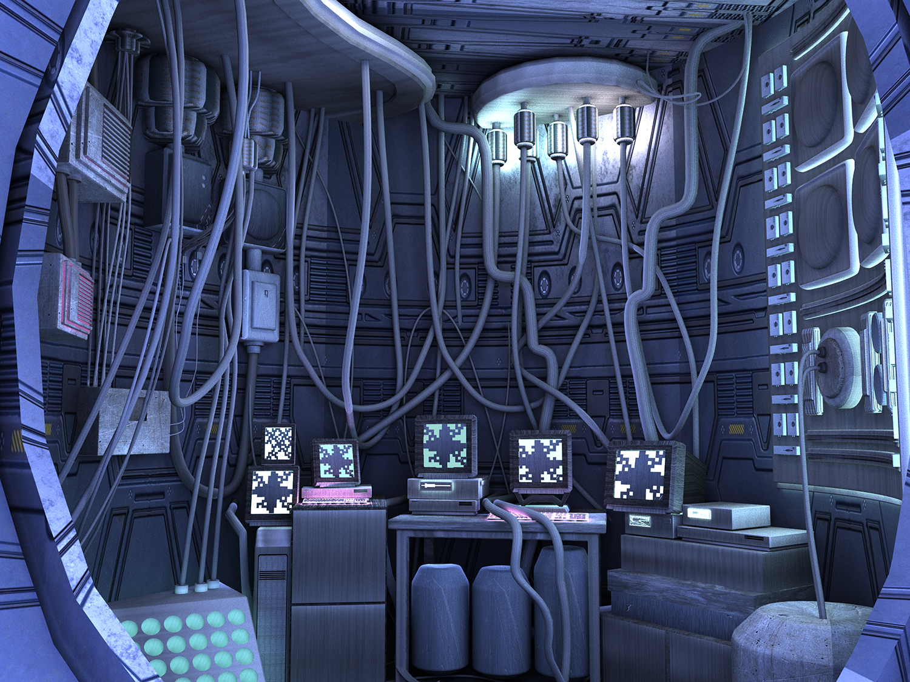
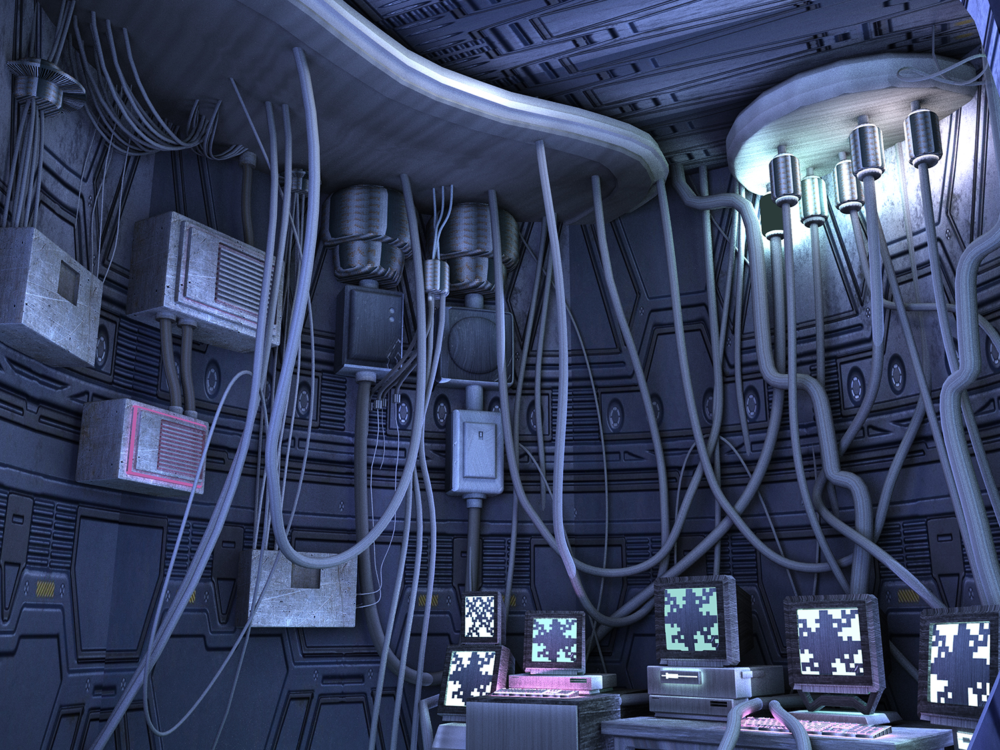
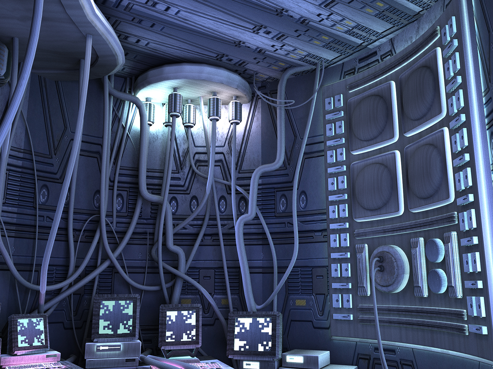

Computer-Generated Renders | Autodesk Maya
While people can create infinite worlds in Virtual Reality, I aimed to make a constraining space that gives the user a sense of pressure.
In a dystopian future, when humans have to flee the mother Earth, each person would have to live in a small spaceship unit. This 3D model provides a snapshot of that situation.
  